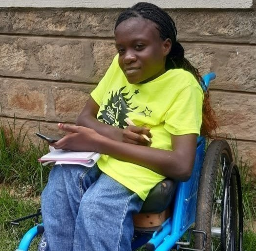

SPINA BIFIDA &
HYDROCEPHALUS
What is Spina bifida
Spina bifida is a birth defect that occurs when the spine and spinal cord fail to form properly. It's a type of neural tube defect. The neural tube is the structure that develops to form a baby's brain, spinal cord and the tissues enclosing them.
The neural tube forms in the earliest stages of conception, typically within the first 28 days. In babies with spina bifida, a portion of the neural tube fails to develop or close properly, causing problems in the spinal cord, bones of the spine and bowel and bladder functioning.
Spina bifida can range from mild to severe, depending on the type, size, location and related complications. Where necessary, the earliest medical intervention for spina bifida involves surgery — although, this doesn't always completely resolve the problem.
Types of Spina bifida
-
Spina bifida Occulta
Spina bifida Occulta is the mildest and most common type of spina bifida. It results in a small gap in one or more of the bones of the spine (vertebrae), some hair or a small protrution may also be present. Most people who have spina bifida occulta don't even know it.
-
Meningocele
This is a rare type of spina bifida and is characterized by a sac of spinal fluid bulging through an opening in the spine. No nerves are affected in this type, and the spinal cord isn't in the fluid sac. Babies with meningocele may have some minor problems with functioning, including those affecting the bladder and bowels.
-
Lipomyelomeningocele
The Lipomyelomeningocele type of spina bifida occurs when the outer part of the vertebrae fails to close completely, leaving an opening in the bones of the spine. fatty tissues usually push through this opening and may cause compression of the nerves.
-
Myelomeningocele
Also known as open spina bifida, myelomeningocele is the most severe type. The spinal canal is open along several vertebrae (small gaps in the bones of the spine) in the lower or middle back. The membranes and spinal nerves push through this opening at birth, forming a sac on the baby's back, typically exposing tissues and nerves. This makes the baby prone to life-threatening infections and may also cause paralysis and bladder and bowel dysfunction.
Spina bifida Occulta, Meningocele, Lipomyelomeningocele & Myelomeningocele
What causes spina bifida?
The causes of Spina Bifida are not certainly known, but research has shown that about 78% of the reported cases were as a result of the lack of folate in the expectant mothers' diets; Especially in the first trimester of pregnancy i.e. the first three months after conception. It is recommended that all women of childbearing age eat fortified foods regularly, take folic acid supplements and ensure proper nutrition. A mother to a child with Spina Bifida is more likely to get another with the same condition.
Effects of Spina bifida
Depending on the severity of a child's condition, spina bifida may cause the following conditions:
| CONDITION | MEDICAL INTERVENTION | |
|---|---|---|
| Paralysis of the lower limbs. | Corrective surgeries and rehabilitation. | |
| Clubfoot. | Corrective surgeries and rehabilitation. | |
| Spine deformities (scoliosis, lordosis) | Corrective surgeries, rehabilitation and use of corsets. | |
| Recurrent wounds. | Lifelong care i.e. continence management, skincare etc. | |
| Skin conditions. | Lifelong care i.e. continence management, skincare etc. | |
| Poor bowel and bladder function and control. | Lifelong care i.e. continence management, skincare etc. |
Children born with Spina Bifida need bowel and bladder management training to protect their kidneys from infections and skin-related issues. 90% of children born with meningocele and myelomeningocele are usually at the highest risk of acquiring Hydrocephalus.
What is Hydrocephalus
Hydrocephalus is a condition where an abnormal build-up of fluid occurs in the brain. The fluid built up in the brain is actually cerebrospinal fluid (CSF) — a clear, colorless fluid surrounding your brain and spinal cord.
Normally, CSF should flow through the ventricles (a network of cavities within the brain). CSF serves as a nutrient delivery and waste removal system for the brain. It bathes the brain and spinal cord, protecting and cushioning them from injury and then reabsorbed into the bloodstream.
The body usually produces the CSF it needs each day and then reabsorbs it into the bloodstream. However, when the normal flow or absorption is blocked, it results in a buildup within the brain. As the CSF builds up, it causes the ventricles to expand, causing pressure inside the brain and increasing the size of the head. Prolonged pressure from too much CSF can lead to brain damage.
Types of Hydrocephalus
Hydrocephalus occurs in the brain when the levels of CSF produced and absorbed is not balanced. This condition is usually classified by the nature of that imbalance. The two broad classifications include:
Communicating (non-obstructive) Hydrocephalus.
This form occurs after the CSF produced is trapped in the brain but it can still flow between the brain ventricles.
Non-communicating (Obstructive) Hydrocephalus.
This form occurs when the CSF produced is trapped in the brain and blocked in one or more of the narrow passages that connect the ventricles. This blockage may arise from a malformation or a narrowing of some kind.
The more specific types of Hydrocephalus include:
-
Congenital Hydrocephalus
This type is mostly present at birth but may also be caused by other issues such as infections or trauma during fetal development. Congenital Hydrocephalus may be linked to other birth defects affecting the spine.
-
Acquired Hydrocephalus
This type develops after birth. It can be caused by infections like meningitis, bleeding, injury, brain hemorrhage or tumors.
-
Normal Pressure Hydrocephalus (NPH)
This type usually develops in adults aged 55 or older. It often occurs after a head trauma, an infection or an internal bleeding in the brain.
-
Ex Vacuo Hydrocephalus
This occurs when there is a damage to the brain caused by stroke or a traumatic injury. This type of HC may not be a dangerous health issue for some people and treatment may not be needed.
Spina bifida Occulta, Meningocele, Lipomyelomeningocele & Myelomeningocele
What causes hydrocephalus?
The causes of hydrocephalus vary. They may arise from:
- Trauma to the brain before, during or after birth.
- Brain tumors.
- Premature births.
- Severe Spina Bifida (Myelomeningocele and Meningocele)
Like other congenital (born with) conditions, children with hydrocephalus require early medical intervention to avoid secondary disabilities such as blindness due to pressure on the optic nerves that give light to the eyes, brain damage, convulsions, celebral palsy and Autism.
TREATMENT OF HYDROCEPHALUS

Treatment of hydrocephalus involves putting a shunt (a small pipe) in the brain as an artificial outlet to drain excessive CSF into the stomach (peritoneal). Advancements in medical research, now allow treatment using Endoscopic Third Ventriculostomy (ETV). This procedure offers higher chances of survival since shunts are prone to infections and failure. ETV surgical procedures are done at Bethany Kids, Kijabe Mission Hospital at subsidized charges. Bethany Kids, Kijabe hospital is a key partner of SHAK.
A VP (Ventriculoperitoneal) shunt is prone to failure since it is a foreign tool introduced into the body hence cannot function as a natural component.
Treatment of hydrocephalus involves putting a shunt (a small pipe) in the brain as an artificial outlet to drain excessive CSF into the stomach (peritoneal). Advancements in medical research, now allow treatment using Endoscopic Third Ventriculostomy (ETV). This procedure offers higher chances of survival since shunts are prone to infections and failure. ETV surgical procedures are done at Bethany Kids, Kijabe Mission Hospital at subsidized charges. Bethany Kids, Kijabe hospital is a key partner of SHAK.
A VP (Ventriculoperitoneal) shunt is prone to failure since it is a foreign tool introduced into the body hence cannot function as a natural component.
Below are signs of shunt malfunction as per the age of the person affected:
| INFANTS | TODDLERS | CHILDREN/ADOLESCENTS |
|---|---|---|
| The infant's head is enlarged. | The toddler's head is enlarged. | Fever. |
| Prominent scalp veins | Vomitting. | Vomitting. |
| Swelling or redness along shunt tract | Fever. | Headache. |
| Fontanel is full and tense when the infant is upright and quiet. |
Irritability and/or sleepiness (lethargy). |
Vision problems. |
| Fever | Headache. | Irritability and/or sleepiness (lethargy). |
| Vomiting | Swelling or redness along shunt tract. | Personality change. |
| irritability and behavior change. | Loss of previous abilities (sensory/motor functions). |
Loss of coordination or balance. |
| Sleepiness | Seizures. | Swelling or redness along shunt tract. |
| Downward deviation of the eyes. | Changes in speech. | Difficulty in waking up or staying awake. |
| Seizures. | Onset or increase in strabismus. | Seizures. |
| Decreased activity. | Decline in academic performance. |
Relationship between Spina bifida & Hydrocephalus
Almost every child born with spina bifida ends up acquiring hydrocephalus if proper medical care is not taken early enough. Spina bifida may affect the nervous system, bones, muscles, kidneys and bladder and cause hydrocephalus and/or other complications. The location on the spine where the undeveloped area occurs is called the Spina Bifida level. Since nerve damage at this site prevents functioning below that level, the higher the level, the greater the impact on normal development and functioning.
The opening in the spinal cord also results in loss of the fluid surrounding the nervous system. This positions the brain further down into the upper spinal column than normal. When this happens, the normal flow of fluids out of the brain is obstructed, causing excessive CSF in the brain, hence hydrocephalus.
Prevention & Early Interventions
Substantial levels of folic acid in expectant women's systems in the early days of pregnancy is critical to preventing spina bifida. Since most women become aware of their pregnancy after 28 days (after the neural tube is formed and closed), experts recommend that daily supplements of 400 micro grams (mcg) of folic acid are taken by all women of childbearing age. Other major spina bifida treatments include fetal surgery during pregnancy or surgery on the baby right after birth.
Hydrocephalus on the other hand cannot be prevented but the risks of acquisition can be lowered in the following ways to protect children and adults:
- Prenatal care. This is done during pregnancy and can help reduce the chances of going into premature labor, which may lead to hydrocephalus.
- Vaccination. Vaccines help prevent illnesses and infections that are linked to hydrocephalus. Regular screening is recommeded to ensure proper care against illnesses and infections that increase the risks of acquiring hydrocephalus.
- Safety gear and equipment. Safety equipment such as helmets and seat belts prevent injuries to the head when riding bikes, driving or in workplaces.